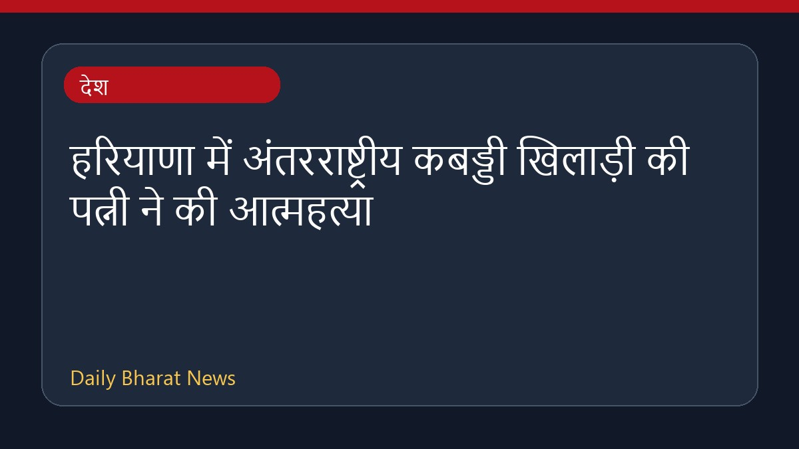

हरियाणा में अंतरराष्ट्रीय कबड्डी खिलाड़ी की पत्नी ने की आत्महत्या

हरियाणा में एक अंतरराष्ट्रीय कबड्डी खिलाड़ी शीलू बलहारा की 23 वर्षीय पत्नी ने कथित तौर पर आत्महत्या कर ली है। यह घटना रोहतक के एक गांव की है। पुलिस ने परिवार में उपजे विवाद और संदिग्ध परिस्थितियों के बाद खिलाड़ी को हिरासत में ले लिया है और मामले की जांच शुरू कर दी है। इस संबंध में विभिन्न मीडिया स्रोतों से जानकारी सामने आई है, हालांकि विस्तृत विवरण अभी सीमित हैं। पुलिस सभी पहलुओं को ध्यान में रखकर आगे की कानूनी कार्रवाई कर रही है।
मूल स्रोत: India News Sources
23-Year-Old Wife Of International Kabaddi Player Dies By Suicide In Haryana - NDTV ↗
23-Year-Old Wife Of International Kabaddi Player Dies By Suicide In Haryana - NDTV ↗